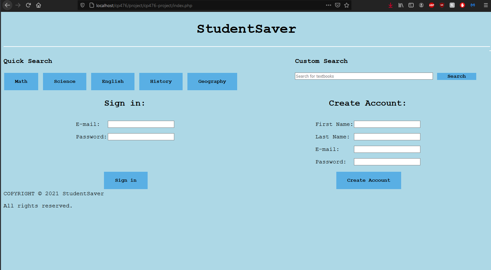
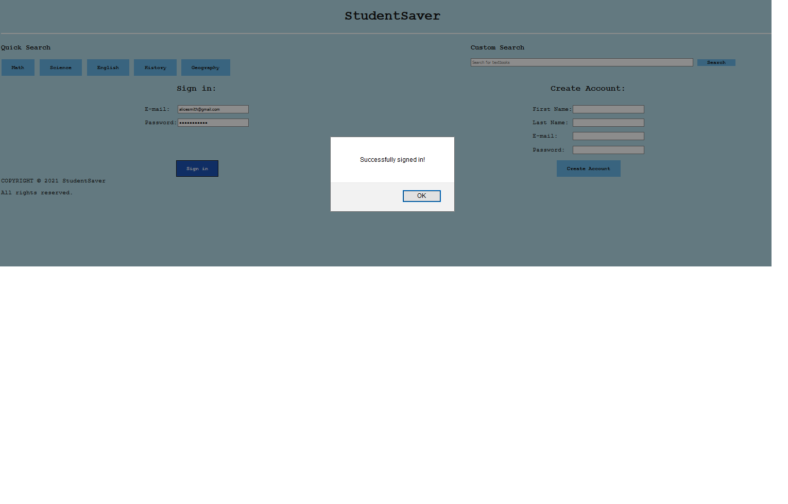
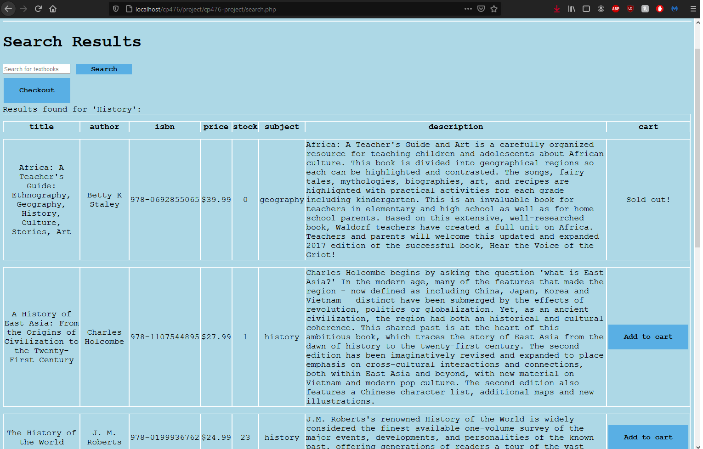
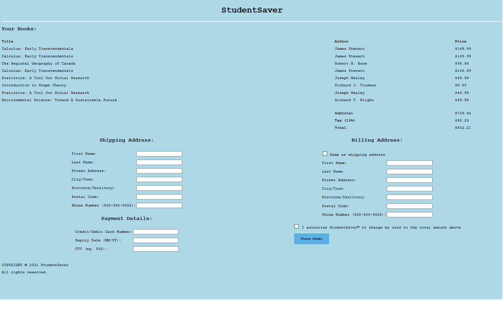
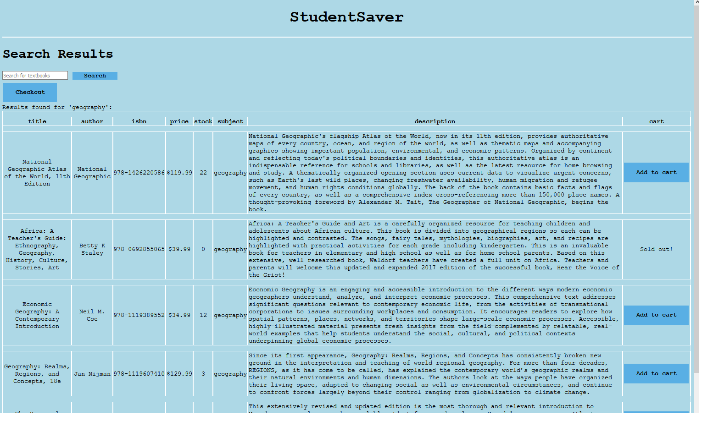
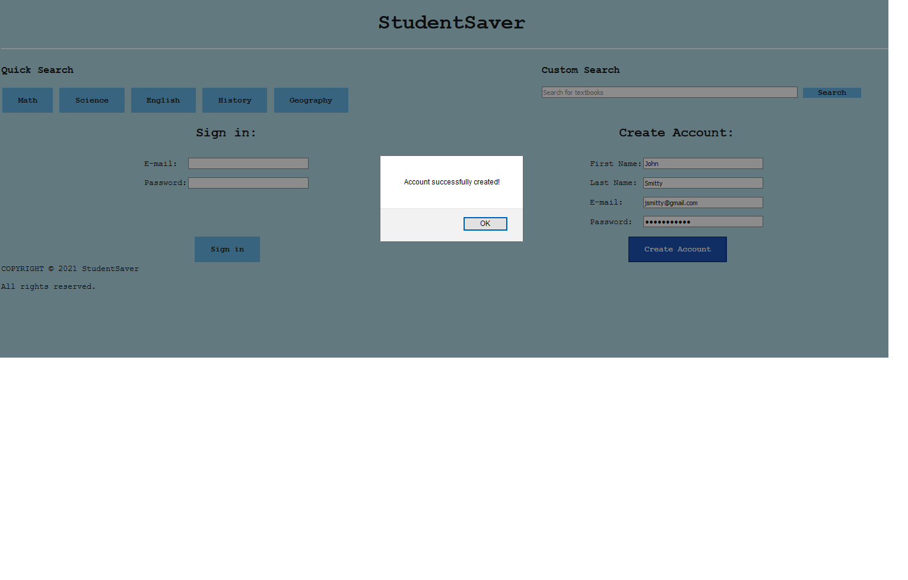

A1 Report
Author: Rob Fedorowicz, Hayden Jeanson, Patrick Mandarino
Date: 10/04/2021
P2 System design & implementation
P2.1 Client side component & UI
Complete (Yes/No) Yes
P2.1 Client side component & UI
P2.2 Server side CGI components
Complete (Yes/No) Yes
P2.2 Server side CGI components
P2.3 Database tier design, data, usage
Complete (Yes/No) Yes
P2.3 Database tier design, data, usage
Complete (Yes/No)? Yes
P2.4 New features and tools
P2.5 Problem solving algorithm
Complete (Yes/No) Yes
P2.5 Problem solving algorithm
P2.6 Efficiency and robustness
Complete (Yes/No) Yes
P2.6 Efficiency and robustness